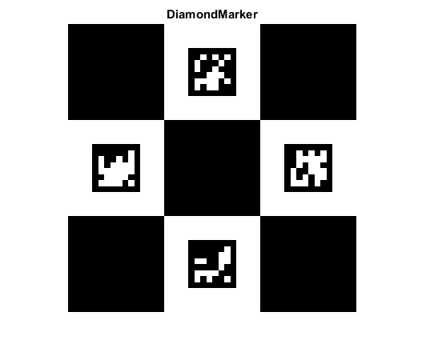

ChArUco Marker Image Demo
This example shows how to create a ChArUco marker image.
Sources:
Contents
Diamond
% params squareLength = 120; % Square side length (in pixels) markerLength = 60; % Marker side length (in pixels) dictionaryId = '6x6_250'; % dictionary id ids = randi([0 249], [1 4]); % Four ids for the ChArUco marker: id1,id2,id3,id4 margins = 0; % Margins size (in pixels) borderBits = 1; % Number of bits in marker borders
Display
% show marker dictionary = {'Predefined', dictionaryId}; markerImg = cv.drawCharucoDiamond(dictionary, ids, ... squareLength, markerLength, 'MarginSize',margins, 'BorderBits',borderBits); imshow(markerImg), title('DiamondMarker') % save image imwrite(markerImg, fullfile(tempdir(),'DiamondMarker.png'));